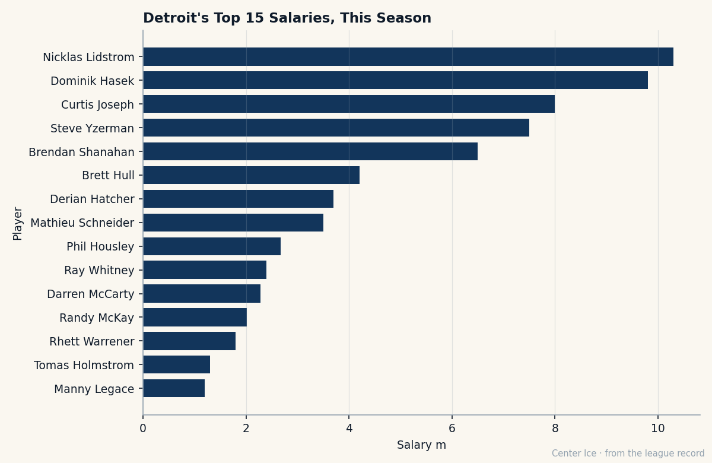

The One Instrument: Brett Hull, 40, and the Body That Became a Shot
Speed 52. Toughness 50. Shot power 99. At 40, the captain of the most expensive team in the league has stopped pretending he is anything else.
 Carol BinghamFeatures writer · Rinkside
Carol BinghamFeatures writer · Rinkside Brett Hull83 was passed over in the 1982 draft. He was passed over again in 1983. The teams that declined him said the same thing each time: they were not convinced of his commitment, or his conditioning. He was still in a juvenile league the first time. The second time, he was playing junior hockey in British Columbia and scoring 48 goals in 50 games, and they still said no.
Brett Hull83 was passed over in the 1982 draft. He was passed over again in 1983. The teams that declined him said the same thing each time: they were not convinced of his commitment, or his conditioning. He was still in a juvenile league the first time. The second time, he was playing junior hockey in British Columbia and scoring 48 goals in 50 games, and they still said no.
In 1984, Calgary took him 117th overall. Twenty-one years later he is 40 years old, the captain of  Detroit Red Wings, and the Book carries his shot power at 99. His speed is 52. His toughness is 50. His fighting is 50. Everything the Bureau has to say about what he can do with his legs and his hands says: be in the right place, and snap the puck.
Detroit Red Wings, and the Book carries his shot power at 99. His speed is 52. His toughness is 50. His fighting is 50. Everything the Bureau has to say about what he can do with his legs and his hands says: be in the right place, and snap the puck.
Forty goals in 51 games. A 132 pace. 22.4 minutes a night. He is the oldest player in the top 30 scorers in the league, and the gap between him and the next-oldest,  Mario Lemieux89 at 39, is one year. The Development Index has him one below his base grade of 86, which means the Bureau thinks he is slightly slower this season than last. He scored 152 points in 82 games last year. The pace has come down from 152 to 132. But 40 goals through 51 games at 40 is still 40 goals through 51 games.
Mario Lemieux89 at 39, is one year. The Development Index has him one below his base grade of 86, which means the Bureau thinks he is slightly slower this season than last. He scored 152 points in 82 games last year. The pace has come down from 152 to 132. But 40 goals through 51 games at 40 is still 40 goals through 51 games.

Then there is the 99. The Bureau's Book grades a skater across attributes, and when a number sits at 99, it is the highest mark the Bureau gives. His shot power is 99. His hockey sense reads 93, puck sense 93, accuracy 90. His balance is 86. His endurance is 84. Everything else falls below 80, and a great deal of it falls below 60. The Bureau has looked at what this body can do and said: it shoots.
The road that made the instrument
Hull grew up in the rinks around Chicago while his father played for the Black Hawks. His mother taught him to skate; she was a figure skater. The family moved back to Canada in 1972 when his father signed with Winnipeg, then the whole thing broke apart around 1979. Hull went to Vancouver with his mother and his two youngest siblings. He was not close to his father after that, though they spoke periodically.
That is the background sheet. The sheet says he was not close to his father after the divorce. The sheet does not say what that distance cost him at the draft table, or whether the doubts about his commitment in 1983 had anything to do with a 19-year-old in a juvenile league whose last name was already too big for him.
After the second rejection he went to the University of Minnesota-Duluth. The coaches there told him he had to skate better, so he did. In 1985-86 he scored 52 goals and broke the school record. Twenty power play goals, seven hat tricks, thirteen multi-goal games, all school records. He turned professional after his sophomore year and made his NHL debut on May 20, 1986, in Game 3 of the Stanley Cup Final with Calgary against Montreal. He hit the post on his first shift. He played two games and lost the series.
Then the Flames sent him to the AHL, where he scored 50 goals and tied a rookie record. Ninety-three points in Moncton, third in the league. He was 21 years old and still had to prove himself to people who had already passed over a man they had been told about for two years.
What $4.20M buys
Detroit carries the highest payroll in the league at $80.89M. The club has 60 points. The cost per point is $1.35M, the worst rate in the league. Around Hull sit  Nicklas Lidstrom90 and
Nicklas Lidstrom90 and  Dominik Hasek92 and
Dominik Hasek92 and  Curtis Joseph90 and
Curtis Joseph90 and  Brendan Shanahan87, a roster built at a price no other club in this league can match. Hull is sixth among the team's top earners at $4.20M, a number the contract ledger shows him carrying into a final year.
Brendan Shanahan87, a roster built at a price no other club in this league can match. Hull is sixth among the team's top earners at $4.20M, a number the contract ledger shows him carrying into a final year.
He has one year left. Morale 94. The contract expires in June, same as  Patrick Lalime90's in Ottawa, same as
Patrick Lalime90's in Ottawa, same as  Ilya Kovalchuk90's in Atlanta. The difference is that Lalime is 30 and Kovalchuk is 21 and the general managers are thinking about what to do next. Hull is 40. The question is not whether he signs an extension. The question is whether he keeps going, and on what terms, and whether he wants to explain it to anyone.
Ilya Kovalchuk90's in Atlanta. The difference is that Lalime is 30 and Kovalchuk is 21 and the general managers are thinking about what to do next. Hull is 40. The question is not whether he signs an extension. The question is whether he keeps going, and on what terms, and whether he wants to explain it to anyone.
He has not answered that. Nobody asked him on The Tunnel this fortnight. The sheet says morale 94, which is high for a man in a contract year on the most expensive club in the league. The sheet does not say what happens in June.
The one thing
There is a version of this story where the 52 speed grade is the tragedy. A man who scored 71 goals last year at age 39 cannot skate anymore. The Index has dropped him below his base for the first time. The body is slowing and the goals are going to keep falling until one season they stop.
That version has its facts straight. The decline is real. The pace is down twenty points. The speed number is a low number for any age.
But 99 is a number that does not move the way speed does. The Bureau's speed grade for  Sergei Fedorov86 has not changed since 1994, or at least it has not changed since the Bureau started carrying it in this form. A shot is a skill the body keeps. A man at 40 with a 99 shot and a 52 speed grade has stopped trying to be a skater who shoots and become a shooter who stands where the play brings him. The 22.4 minutes a night are spent in the two spots where a snap shot ends a shift: the slot and the half-wall. His endurance at 84 says the legs still carry him there. His balance at 86 says the upper body still holds while the shot comes out.
Sergei Fedorov86 has not changed since 1994, or at least it has not changed since the Bureau started carrying it in this form. A shot is a skill the body keeps. A man at 40 with a 99 shot and a 52 speed grade has stopped trying to be a skater who shoots and become a shooter who stands where the play brings him. The 22.4 minutes a night are spent in the two spots where a snap shot ends a shift: the slot and the half-wall. His endurance at 84 says the legs still carry him there. His balance at 86 says the upper body still holds while the shot comes out.
He was the 117th pick of a team that did not know what to do with him at 21. He went to the AHL. He tied a rookie goal record there. He came up and scored 152 points last year and 82 in 51 games this year and the speed number has come down and the shot number has not. At 40, with one year left and morale at 94 and the most expensive payroll in hockey going to waste around him, he has finally become the thing the 117th pick was supposed to be.